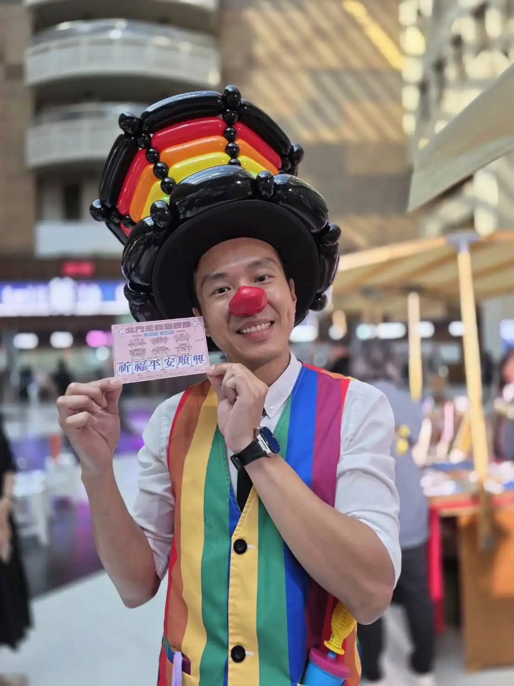
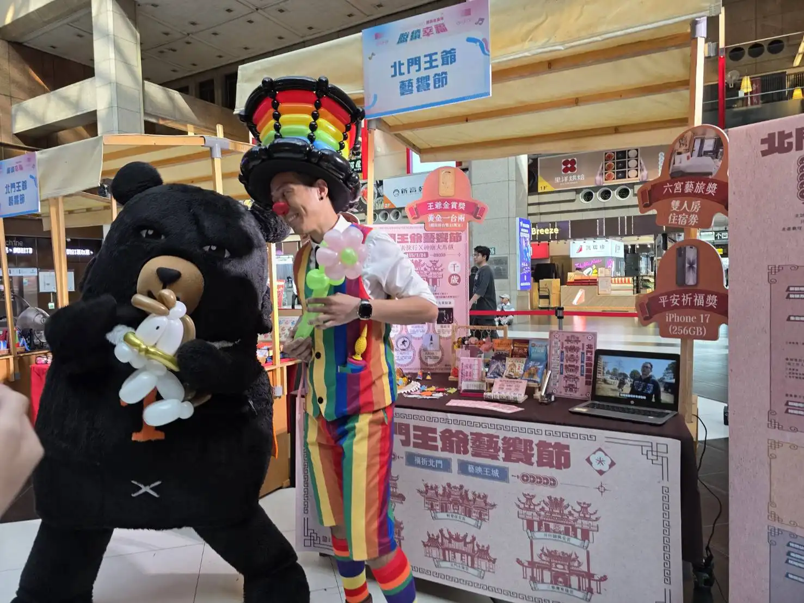
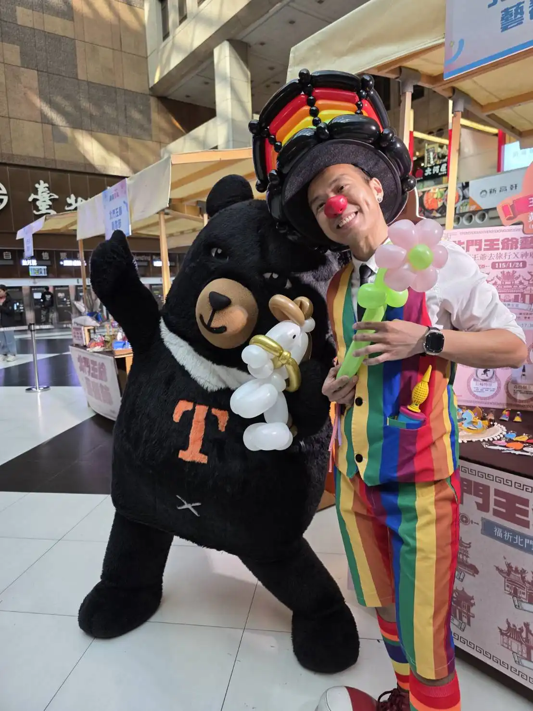
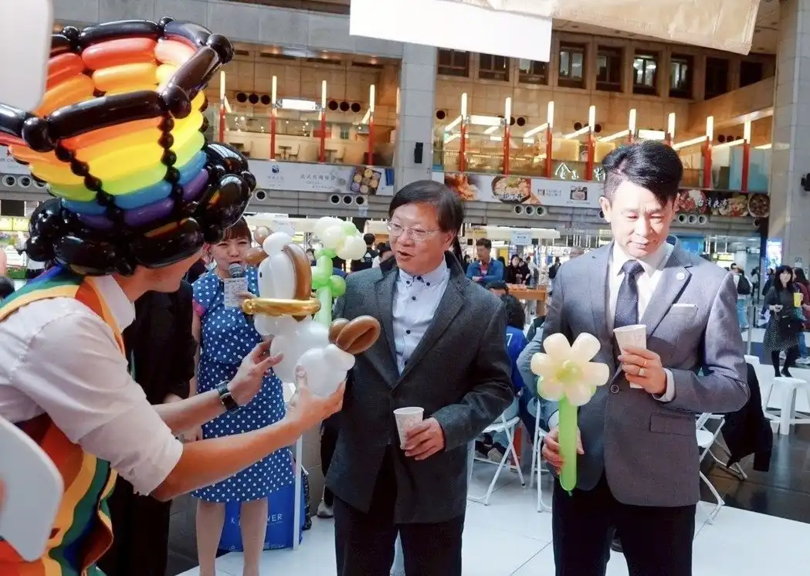
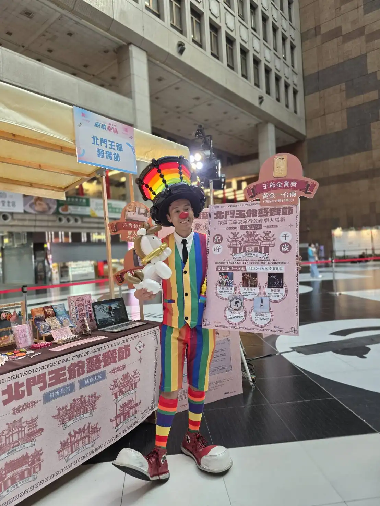

氣球大叔 Sony × 台北車站大廳｜雲嘉南濱海「鹽續幸福」記者會紀實
官方記者會引流秀 × 熊讚聯手互動｜用氣球藝術為 2026 馬年觀光注入熱情能量
📍 地點：台北車站大廳
國家級推廣盛事：雲嘉南濱海 × 鹽續幸福啟動
交通部觀光署雲嘉南濱海國家風景區管理處於台北車站盛大舉辦「2025-2026 鹽續幸福系列活動」記者會。氣球大叔 Sony 受邀出席，在全台人流最密集的交通樞紐，透過極具視覺張力的 客製化氣球藝術，成功將雲嘉南的濱海魅力呈現給廣大市民與遊客，為這場官方推廣活動創造了最強的人氣引流。

人氣高峰：與台北吉祥物「熊讚」的魔法互動
活動現場的驚喜焦點，莫過於台北市超人氣吉祥物 「熊讚」 與氣球大叔的超萌互動。Sony 特別設計了多款色彩亮麗的造型氣球，熊讚抱著氣球手舞足蹈的模樣，吸引了無數親子家庭駐足搶拍，瞬間將台北車站大廳轉化為充滿溫度與歡笑的親子遊樂園。


文化創意與祝福：致贈「馬到成功」造型氣球
為了迎接即將到來的馬年，氣球大叔現場展現精湛手藝，折製了象徵「馬到成功」的精緻馬兒造型氣球，並親手致贈給觀光署與風景區管理處的高層長官。這不僅是一項表演，更是將文化祝福與企業形象緊密結合的藝術策劃，深受官方長官與現場媒體的一致讚許。


- ✨ 最強引流力： 在台北車站高流量場域，氣球藝術是吸引目光的最佳視覺武器。
- 🤝 長官高度認可： 具備接待官方貴賓與大型記者會的高品質服務經驗。
- 🎨 跨界聯名： 豐富的吉祥物互動經驗，讓活動氣氛更加活潑、更具社群傳播力。
「氣球大叔的加入，讓專業的記者會多了一份溫暖與親和力。馬到成功的寓意更是完美契合我們的觀光推廣目標！」
💡 關於台北官方記者會氣球表演的常見問題
- Q: 在台北車站這種開放且人潮眾多的交通樞紐舉辦記者會，氣球表演的動線該如何規劃？
- A: 台北車站大廳空間廣闊且人流快速，我們通常會將氣球互動區設置在主舞台側邊或官方攤位旁。氣球大叔會利用高辨識度的氣球造型與主動親和的互動方式，將路過旅客自然引導至活動區域，既不會阻礙車站原有動線，又能為記者會創造極佳的聚客與駐足效果。
- Q: 官方記者會或政府公部門活動，可以客製化專屬的氣球造型嗎？
- A: 當然可以！如本次雲嘉南濱海記者會，為了呼應即將到來的 2026 馬年，我特別設計了「馬到成功」的精緻造型氣球贈予長官。我們非常歡迎主辦單位提前告知活動主軸、吉祥物或重點推廣項目，我會為您量身打造專屬氣球藝術，讓媒體畫面更豐富、更有話題性。
- Q: 如果現場有像「熊讚」這類的大型吉祥物，氣球表演可以結合互動嗎？
- A: 這是非常棒的亮點安排！氣球大叔 Sony 擁有豐富的跨界聯名與吉祥物互動經驗。我們可以在台上與吉祥物進行趣味魔術，或是為吉祥物戴上特製的氣球配件，這種「強強聯手」的超萌畫面往往能成為現場民眾與媒體瘋狂搶拍的焦點，大幅提升社群傳播力。
🎈 正在尋找台北官方記者會氣球表演嗎？
如果您也希望為您的活動創造像現場一樣爆棚的人氣與驚喜，氣球大叔 Sony 是您的首選！我們專注於提供高品質的互動演出與情境佈置：
- 百貨商場活動：中庭舞台秀、假日聚客、週年慶造勢。
- 品牌行銷推廣：新品發表會、門市開幕、VIP 客戶派對。
- 親子家庭日：企業家庭日、社區晚會、私人慶生派對。
📅 本文整理於 2025 年 12 月 10 日，完整紀錄真實活動現場氛圍。